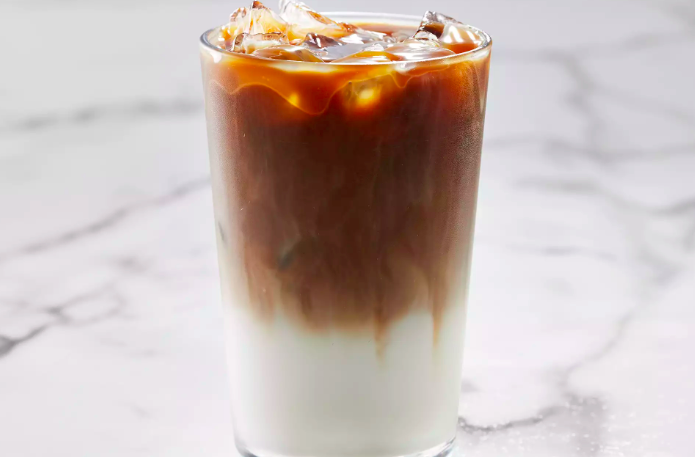

Iced Caramel Macchiatto

This caramel macchiato recipe is a perfect balance of coffee, vanilla, milk, and caramel. This sweet and creamy summer drink can easily be made at home with an iced coffee concentrate like Gevalia Cold Brew Concentrate - House Blend.
Ingredients:
- 1 tablespoon vanilla-flavored syrup
- ⅓ cup ice cubes
- ¾ cup milk
- 4 ounces Gevalia® Cold Brew Concentrate - House Blend
- 1 tablespoon caramel sauce
Instructions:
- Pour vanilla syrup into a drinking glass. Add ice cubes, then pour in milk.
- Slowly pour in cold brew concentrate. Drizzle with caramel sauce.
Home